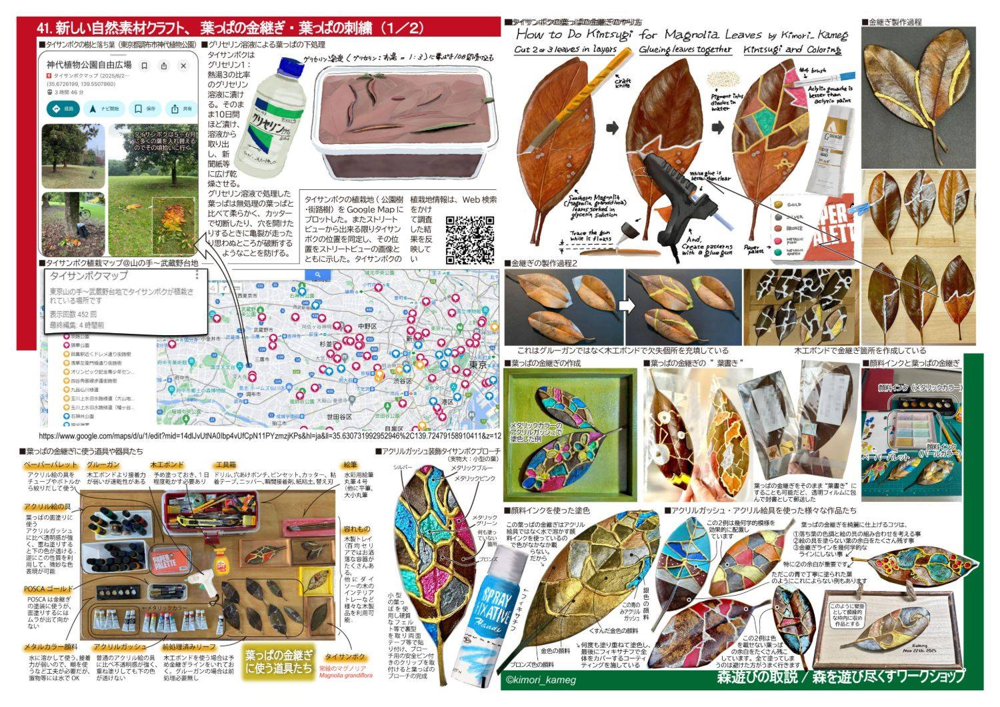

器の割れを漆と金で継ぐ「金継ぎ」。その発想を落ち葉に持ち込んだのが「葉っぱの金継ぎ」です。考案したのは、あかばやし探検隊でおなじみの川村晃寛さん（カメさん）。重ねて切った葉を貼り合わせ、継ぎ目を金や銀のラインで描き起こし、色を重ねていきます。

使うのはタイサンボクの落ち葉
材料はタイサンボク（常緑のマグノリア／Magnolia grandiflora）の落ち葉です。厚みがあって丈夫な葉質が金継ぎに向いていて、考案者も「タイサンボクの葉の質に勝るものはない」と話しています。
タイサンボクは5〜6月に多くの葉を入れ替えます。落ち葉を拾うなら、この時期が狙いめです。
下ごしらえ：グリセリン溶液に漬ける
拾った葉は、そのまま使わずに下処理をします。
- グリセリン1：熱湯3の割合で溶液をつくる
- 葉を10日間ほど漬ける
- 溶液から取り出し、新聞紙などに広げて乾燥させる
こうして処理した葉は、無処理の葉に比べて柔らかくなります。カッターで切ったり穴を開けたりするときに亀裂が走って、思わぬところが破断するのを防げます。
つくり方の流れ
1. 重ねて切る
葉を2〜3枚重ね、クラフトナイフで切り出します。重ねて切ることで、継ぎ合わせたときにぴたりと合う形になります。
2. 貼り合わせる
接着にはグルーガンか木工ボンドを使います。木工ボンドは接着力が強い反面、塗ってから1日ほど乾かす必要があり、グルーガンは速乾ですが接着力は弱めです。欠けてしまった部分を木工ボンドで充填することもできます。
3. 金継ぎラインを描く
グルーガンを浮かせぎみに走らせて線を引くか、木工ボンドで線を盛り上げます。この盛り上がった線が、仕上がりの印象を大きく左右します。
4. 彩色する
- アクリルガッシュ｜不透明感が強くよく発色します。乾くと下の色が透けません
- アクリル絵の具｜透明感があり、重ね塗りで微妙な色合いを表現できます
- 顔料インク｜水で溶いて使います。色がギラギラせず、落ち着いた仕上がりに
- POSCA ゴールド｜金継ぎラインの塗装に。面を塗るのには向きません
きれいに仕上げる5つのコツ
北のクラフトフェアでのワークショップ作品から、考案者が挙げたポイントです。
- 落ち葉の色調と絵の具の組み合わせを考える
- 絵の具を塗らない葉の余白をたくさん残す（ここが特に重要）
- 金継ぎラインを幾何学的なラインだけにしない。直線的なラインと、偶発的な曲線のラインを組み合わせる
- 金継ぎラインを細く、そして盛り上げる
- ムラができないよう、色を丁寧に塗り重ねる
作品の楽しみ方
- 葉書き｜そのまま葉に手紙を書き、透明フィルムに包んで封緘すれば郵送もできます
- ブローチ｜小型の葉を使い、裏側にフェルトなどを貼ってブローチ用のピンを付けます
- 額装｜トレーや木枠に収めると、そのまま飾れる作品になります
園や学校の記念品にも
矢巾町の保育園では、卒園記念として園児たちが葉っぱの金継ぎに挑戦しました。やり方を工夫すれば、未就学児でもデザイン・色選び・筆づかいまで自分でできます。完成した作品は木製の額に入れ、卒園日の日付と名前を添えて、ご両親へのサプライズになりました。
岩手県森林整備課所管の「森のゼミナール」森林学習会として、小中学校や幼稚園・保育園でも実施できます（年間の開催数には上限があります）。